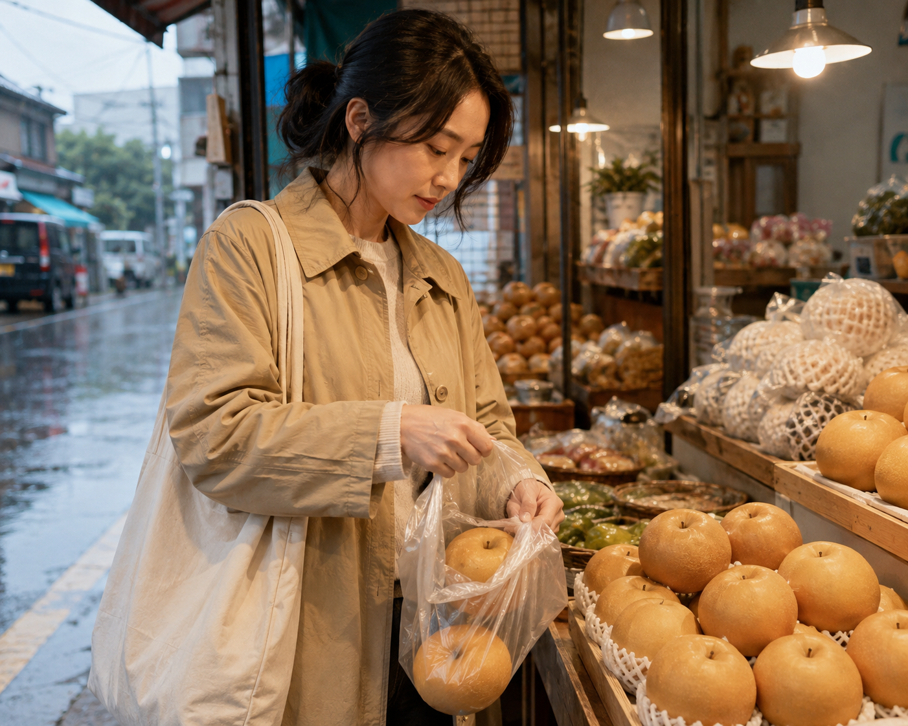

STORIES · 2026.09.05
비 오는 아침,
배 두 알만 담아 가는 사람들
비가 부슬부슬 오는 아침에는 장바구니도, 사람 걸음도 평소보다 조금 작아집니다. 그럴 때 과일가게 앞에 멈춘 손은 큰 박스보다 오늘 하루 무리 없이 들고 갈 수 있는 배 두 알 쪽으로 먼저 갑니다.

배는 넉넉한 과일입니다. 상 위에 올려 두면 든든하고, 손님이 오거나 가족이 모이는 날에도 잘 어울립니다. 그런데 비 오는 평일 아침의 가게 앞에서는 그 넉넉함보다 다른 기준이 먼저 움직입니다. 우산 한 손, 가방 한 손, 젖은 바닥을 조심하며 걸어야 하는 날에는 많이 사는 마음보다 잘 들고 가는 마음이 앞섭니다.
그래서 어떤 사람은 배 한 봉지를 오래 보다가 결국 두 알만 담아 갑니다. 부족해서가 아니라, 오늘의 생활 단위에 맞춰 사는 것입니다. 한 알은 집에 있는 어른 간식으로, 다른 한 알은 저녁에 차갑게 깎아 먹으려고 남겨 두는 식입니다. 과일을 사는 장면이 점점 큰 계획보다 하루의 리듬에 가까워지고 있다는 뜻이기도 합니다.
요즘 과일은 많이 사는 장면보다 오늘 무리 없이 들고 가는 장면에서 더 자주 선택됩니다.
비 오는 날에는 특히 그렇습니다. 무거운 상자는 차가 있는 날로 미루고, 오늘은 비에 젖지 않게 작은 봉지 하나만 챙깁니다. 이 선택은 소비가 줄었다는 뜻이라기보다, 과일이 사람 일정과 동선에 더 촘촘히 맞춰지고 있다는 뜻에 가깝습니다. 같은 배라도 명절 준비의 과일일 때와 평일 아침 한두 알의 과일일 때 역할이 완전히 달라집니다.
비 오는 날의 과일 소비는 품목보다 단위를 먼저 보여 줍니다. 얼마나 좋은 과일인가보다 오늘 들고 가기 쉬운가, 집에서 남기지 않을 양인가가 더 빠르게 판단됩니다.
대한과일협회가 이런 장면을 STORIES에 남기는 이유도 여기에 있습니다. 과일 소비를 크게 움직이는 것은 늘 행사나 선물 수요만이 아닙니다. 비 오는 아침처럼 아주 평범한 시간대에도 사람들은 자기 하루에 맞는 크기와 수량을 고르며, 그 작은 선택들이 쌓여 지금의 소비 리듬을 만듭니다.
배 두 알만 담아 가는 장면은 소박하지만 선명합니다. 많이 사는 법보다 잘 맞게 사는 법이 더 중요해진 자리, 과일이 특별한 날의 준비물이 아니라 평범한 하루를 무리 없이 지나가게 돕는 식탁의 동반자라는 사실이 그 봉지 안에 조용히 들어 있습니다.